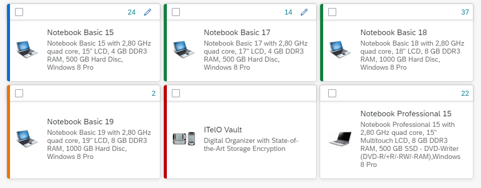

What's New in OpenUI5 1.70
With this release OpenUI5 is upgraded from version 1.69 to 1.70.
New Controls
| sap.f.GridListItem We have introduced a new control GridListItem to be used in the default items aggregation of sap.f.GridList. It consists of a header toolbar and content.

Note that even though the content aggregation can be used for any control, complex responsive layout controls, such as Table and Form, should not be used. For more information, see the API Reference and the Sample. |
Improved Features
|
OpenUI5 OData V4 Model The new version of the OpenUI5 OData V4 model introduces the following features:
For more information, see OData V4 Model, the API Reference, and the Samples. |
Improved Controls
| sap.f.GridContainer We have polished the code, added right-to-left (RTL) support, and implemented a polyfill for Microsoft Internet Explorer 11 and Microsoft Edge browsers. For more information, see the API Reference and the Sample. |
| sap.m.ColorPalette With the new displayMode enum property of sap.m.ColorPalettePopover, you can now control which variant of sap.m.ColorPicker is visualized when the More colors... button is pressed. For more information, see the API Reference and the Sample. |
| sap.m.DatePicker We have introduced a more intuitive way for users to confirm date selection. Setting the new showFooter property enables a footer with OK and Cancel buttons for the user to confirm or cancel the date selection. When showFooter is set to true, the picker no longer closes when a day is selected and there's no need to reopen the picker to select the month or year. For more information, see the API Reference and the Sample. |
|
sap.m.SelectDialog
For more information, see the API Reference and the Samples. |
| sap.m.SinglePlanningCalendar We have introduced support for indicating working hours in the sap.m.SinglePlanningCalendar control. Additionally, app developers can now show or hide the rest of the hours in the day. The startHour and endHour properties define the starting and ending hours of the working day, and these are indicated visually on the screen. The fullDay property contains a boolean flag, which determines whether nonworking hours are aslo displayed. For more information, see the API Reference and the Sample. |
| sap.m.TableSelectDialog We have extended the search event of the control with a new clearButtonPressed parameter. The value of this parameter is set to true when the event is fired by pressing the Clear button and to false, when the Search button is pressed. For more information, see the API Reference and the Samples. |
|
sap.ui.table.AnalyticalTable When you group columns in an analytical table, you can now select Expand All in the context menu to expand all nodes. Also, you can now expand individual nodes via the context menu by selecting Expand Level. For more information, see the API Reference. |
| sap.ui.unified.Calendar We have improved the navigation in the multiple months view for sap.ui.unified.Calendar. When you navigate to the next/previous months, the displayed calendar view is now with one month increments/decrements, instead of two. Note that this behaviour comes out of the box without setting any properties. For more information, see the API Reference and the Sample. |